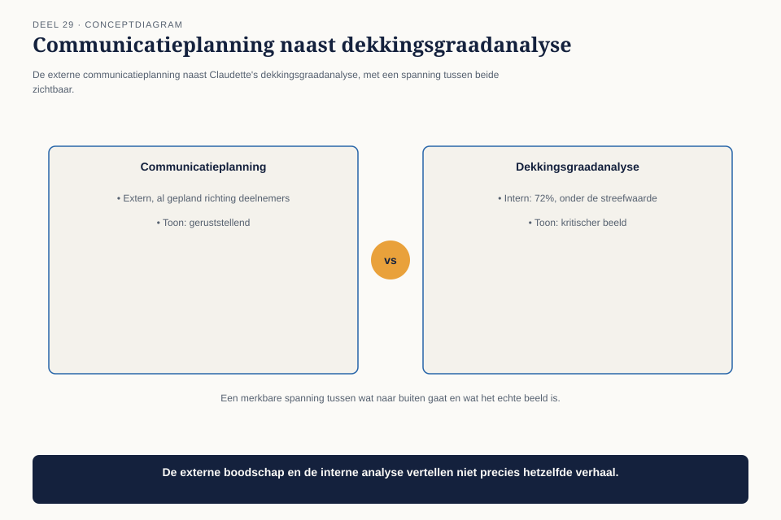
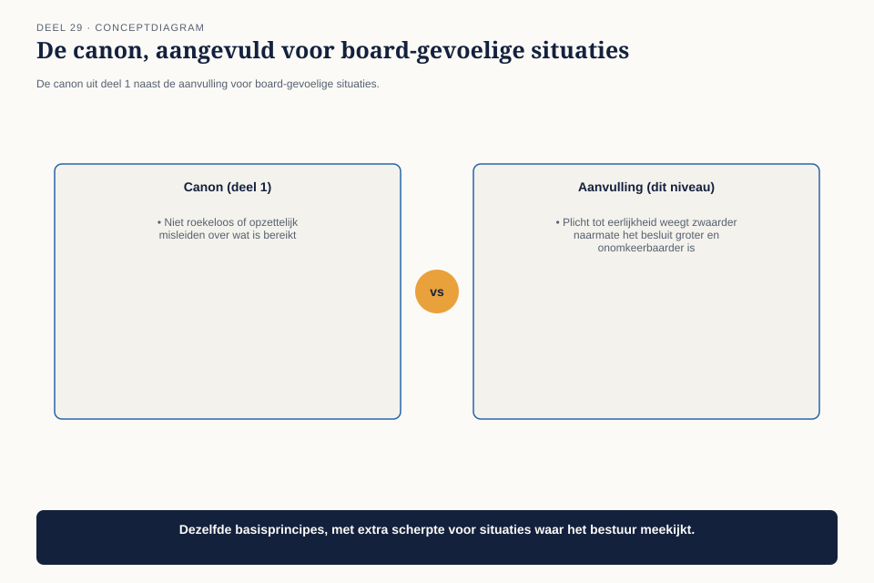
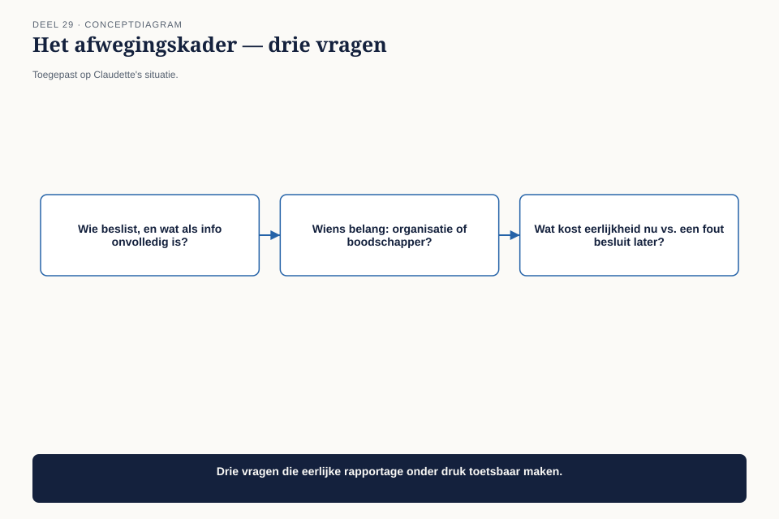

Cursus BTABoK · Niveau 3 (CITA-S / CITA-P) · Deel 29 van 30
Gedragscode voor senior architecten
Deel 1, helemaal aan het begin van deze cursus, introduceerde de gedragscode-canons die elk architectuurbesluit onderbouwen — waaronder de waarschuwing tegen roekeloos of opzettelijk misleiden. Op praktijkniveau, met een raad van bestuur die luistert en een resultaat dat extern zichtbaar is, komt die canon onder een ander soort druk te staan dan bij één ontwerpbesluit. Dit deel behandelt wat er gebeurt als eerlijke rapportage en politieke of tijdsdruk botsen.
7secties
±2udagdeel + huiswerk
4controlevragen
4figuren
Positionering. Deze cursus bereidt je voor op de Iasa-certificeringen en is uitdrukkelijk géén vervanging van het officiële examen- en cursusmateriaal van Iasa.
Niveau 3: ❶ De architectuurpraktijk → ❷ Mentoring en ontwikkeling → ❸ Community of practice → ❹ Board-communicatie → ❺ Strategische breedte → ❻ Risicobeheer en continuïteit op praktijkschaal → ❼ Gedragscode voor senior architecten (hier) → ❽ Het board-dossier en de afsluitende verdediging
01
Waar dit deel over gaat
⏱ 8 min
Deel 1, helemaal aan het begin van deze cursus, introduceerde de gedragscode-canons die elk architectuurbesluit onderbouwen — waaronder de waarschuwing tegen roekeloos of opzettelijk misleiden. Op praktijkniveau, met een raad van bestuur die luistert en een resultaat dat extern zichtbaar is, komt die canon onder een ander soort druk te staan dan bij één ontwerpbesluit. Dit deel behandelt wat er gebeurt als eerlijke rapportage en politieke of tijdsdruk botsen.
Aan het eind van dit deel kun je:
een situatie herkennen waarin de druk om positief te rapporteren de volledigheid van de waarheid in gevaar brengt;
een afwegingskader toepassen dat het belang van de ontvanger van informatie boven het gemak van de boodschapper stelt;
een boodschap overbrengen die eerlijk is zonder onnodig alarmerend te zijn.
02
De vraag van de communicatieafdeling
⏱ 8 min
Twee maanden voor de wettelijke deadline voor de eerste grote Wtp-mijlpaal — de herberekende aanspraken van de eerste groep deelnemers — vraagt de communicatieafdeling van Meridiaan Claudette om een go/no-go-advies. Ze weten al dat het antwoord “voorlopig nee” wordt: de architectuur-dekkingsgraad op deze specifieke werkstroom staat op tweeënzeventig procent, onder de streefwaarde. Er zijn al externe communicatie-uitingen gepland richting deelnemers waarin de mijlpaal wordt aangekondigd.

Figuur 29-1 — de externe communicatie-planning naast Claudette's dekkingsgraadanalyse, met een spanning tussen beide zichtbaar
De communicatieafdeling vraagt niet expliciet om een gunstiger beeld, maar de vraag komt met een impliciete druk: “Kun je het advies zo formuleren dat we niet meteen naar de raad van bestuur hoeven met een probleem?”
03
De canon, herhaald op het hoogste niveau
⏱ 8 min
De eerste competentie herneemt de gedragscode-canon uit deel 1 letterlijk, met een aanvulling die specifiek is voor het board-niveau waar dit deel zich op richt.

Figuur 29-2 — de canon uit deel 1 naast de aanvulling voor board-gevoelige situaties
De canon uit deel 1 (niveau 1): niet roekeloos of opzettelijk misleiden over wat is bereikt.
De aanvulling voor dit niveau: de plicht om eerlijk te informeren geldt sterker naarmate het besluit dat op de informatie wordt gebaseerd, groter en onomkeerbaarder is. Een go/no-go-advies aan een raad van bestuur, met externe communicatie al gepland, is precies zo’n besluit — de kosten van een te optimistisch advies zijn hier groter dan bij een technisch besluit binnen één team.
Dit is geen nieuwe regel, maar dezelfde regel, toegepast met scherpere consequenties. Wat bij een teambesluit een kleine onnauwkeurigheid zou zijn, wordt bij een boardbesluit een compromis met de betrouwbaarheid van de hele praktijk.
04
Het afwegingskader: wiens belang weegt hier het zwaarst?
⏱ 8 min
De tweede competentie geeft een concreet instrument om de druk uit 29.2 te doorzien: een korte set vragen die het belang van de ontvanger van informatie boven het gemak van de boodschapper plaatst.

Figuur 29-3 — het afwegingskader — drie vragen, toegepast op Claudette's situatie
Vraag
Toegepast op de situatie
Wie neemt het besluit op basis van deze informatie, en wat gebeurt er als die informatie onvolledig is?
de raad van bestuur beslist over een externe aankondiging naar deelnemers; een te positief advies zou een mijlpaal aankondigen die vervolgens niet gehaald wordt
Is de druk om het gunstiger voor te stellen in het belang van de organisatie, of van het gemak van wie de boodschap moet brengen?
het gemak van de communicatieafdeling, niet het belang van Meridiaan of de deelnemers
Wat kost eerlijkheid nu, tegenover wat een verkeerd besluit later kost?
een ongemakkelijk gesprek nu, tegenover een gebroken externe belofte aan deelnemers later — vergelijkbaar met de kosten-van-uitstel-logica uit deel 15
Het antwoord dat uit dit kader volgt, is zelden een keuze tussen twee gelijkwaardige opties. Zodra de vraag concreet wordt gesteld — wie beslist, wiens belang, wat kost uitstel — wordt meestal snel duidelijk dat de druk om het gunstiger voor te stellen geen legitieme grond heeft.
Controlevragen
Uit Werkboek deel 29, Opdracht 1 — Het afwegingskader toepassen
1Het afwegingskader toepassenToon antwoord
Individueel, 20 minuten
Beschrijf een situatie uit je eigen werk (of een denkbeeldige) waarin je onder druk stond om iets gunstiger voor te stellen dan het was. Doorloop de drie vragen uit 29.4. Wat was de uitkomst, en zou het kader destijds tot een ander antwoord hebben geleid?
Uitwerking
Geen modelantwoord. Verwacht patroon: bij toepassing achteraf realiseren veel deelnemers zich dat de druk destijds vooral voortkwam uit het gemak van een tussenpersoon, niet uit een legitiem organisatiebelang — consistent met de bevinding in 29.4.
Uit Werkboek deel 29, Opdracht 3 — Wiens belang, wiens gemak
2Wiens belang, wiens gemakToon antwoord
Individueel, 15 minuten
Voor elk van de volgende situaties: is de druk om het gunstiger voor te stellen in het belang van de organisatie, of van het gemak van de boodschapper?
Een projectmanager vraagt een positiever statusbericht “omdat de klant toch al gespannen is”
Een teamlead vraagt een risico wat lager in te schatten “zodat het budget niet wordt heroverwogen”
Een collega vraagt een deadline optimistischer te noemen “omdat we het wel gaan redden”
Een opdrachtgever vraagt expliciet naar de onzekerheden in een schatting, ook al maakt dat het verhaal minder overtuigend
Uitwerking
#
Situatie
Belang of gemak
1
Positiever statusbericht, “klant is gespannen”
Gemak van de boodschapper — de klant heeft juist accurate informatie nodig
2
Risico lager inschatten, “budget niet heroverwegen”
Gemak — verhult een reëel risico om een lastig gesprek te vermijden
3
Deadline optimistischer, “we redden het wel”
Gemak/hoop, geen onderbouwd belang — tenzij er een concreet plan achter zit
4
Expliciet naar onzekerheden vragen
Belang van de organisatie — dit is precies het gedrag dat het afwegingskader beloont
Het patroon. Drie van de vier situaties (1, 2, 3) tonen druk vanuit gemak, niet vanuit een legitiem belang. Situatie 4 is het tegenvoorbeeld: iemand die expliciet om volledige informatie vraagt, ondanks dat het minder overtuigend klinkt, handelt precies volgens de canon uit 29.3.
05
Eerlijk zonder onnodig alarmerend
⏱ 8 min
De derde competentie voorkomt een overcorrectie: eerlijkheid betekent niet dat elke boodschap in het meest alarmerende licht wordt gebracht. Een dekkingsgraad van tweeënzeventig procent is een reëel signaal om bij te sturen, geen catastrofe — en de toon van de boodschap moet dat onderscheid maken, net als bij de boardcommunicatie uit deel 26.
Figuur 29-4 — twee versies van hetzelfde advies — overdreven gerustgesteld, overdreven alarmerend, en de gebalanceerde versie ertussen
Claudette’s uiteindelijke advies aan de raad: “De dekkingsgraad op deze werkstroom staat op tweeënzeventig procent, onder onze streefwaarde van negentig. Dat betekent niet dat de mijlpaal per se niet gehaald wordt, maar wel dat we het risico onderschatten als we nu al extern communiceren. Ik adviseer de aankondiging met zes weken uit te stellen, in die tijd naar vijfentachtig procent te komen, en dan te communiceren.”
Dit advies is eerlijk over het probleem, concreet over wat het zou kosten om het op te lossen, en biedt een weg vooruit — geen alarmbericht zonder oplossing, en geen gerustgestelde vaagheid zonder de kern van het probleem.
Controlevragen
Uit Werkboek deel 29, Opdracht 2 — Herschrijven: eerlijk zonder alarmerend
1Herschrijven: eerlijk zonder alarmerendToon antwoord
In tweetallen, 20 minuten
Neem een technisch of risicobericht uit je eigen werk. Schrijf twee overdreven versies (te gerustgesteld, te alarmerend) en dan de gebalanceerde versie ertussen, naar het voorbeeld van 29.5.
Uitwerking
Geen modelantwoord. Beoordeel op: bevat de gebalanceerde versie zowel het probleem als een concreet vervolgstap, of blijft het bij een van de twee? Een goede gebalanceerde versie doet beide.
Uit Werkboek deel 29, Opdracht 4 — Het go/no-go-advies
2Het go/no-go-adviesToon antwoord
In groepen van drie tot vier, 20 minuten
Stel, naar het voorbeeld van Claudette in 29.5, een kort go/no-go-advies op voor een fictieve of eigen situatie: het probleem eerlijk benoemd, concreet wat het zou kosten om het op te lossen, en een weg vooruit.
Uitwerking
Geen modelantwoord; beoordelingscriteria:
Criterium
Voldoet als
Het probleem eerlijk benoemd
een concreet getal of feit, geen vage formulering
Concrete kosten van het oplossen
een tijdsindicatie of ander concreet gevolg
Een weg vooruit
het advies eindigt niet bij het probleem, maar bij een handelingsperspectief
06
Wat de raad besluit
⏱ 8 min
De raad van bestuur, geconfronteerd met de eerlijke boodschap in plaats van een gunstig geformuleerd advies, kiest voor het uitstel. De externe communicatie wordt met zes weken verschoven, zonder dat deelnemers ooit een belofte horen die niet wordt nagekomen. Zes weken later staat de dekkingsgraad op zevenentachtig procent — niet perfect, maar boven de streefwaarde, en de mijlpaal wordt gehaald zoals nu daadwerkelijk aangekondigd.
De communicatieafdeling, die aanvankelijk om een gunstiger advies vroeg, erkent achteraf dat het eerlijke advies hen heeft behoed voor een veel groter probleem: een publieke belofte die niet was nagekomen.
07
Kernbegrippen
⏱ 8 min
Begrip
Betekenis in deze cursus
De canon op boardniveau
dezelfde plicht tot eerlijkheid uit deel 1, met scherpere consequenties naarmate het besluit groter en onomkeerbaarder is
Het afwegingskader
wie beslist en wat kost onvolledige informatie; wiens belang weegt de druk om het gunstiger voor te stellen; wat kost eerlijkheid nu tegenover een verkeerd besluit later
Eerlijk zonder onnodig alarmerend
een boodschap die het probleem niet verbergt, maar ook niet overdrijft, en een weg vooruit biedt
Verder naar deel 30
Deel 30 — Het board-dossier en de afsluitende verdediging — bouwt voort op wat hier is behandeld.